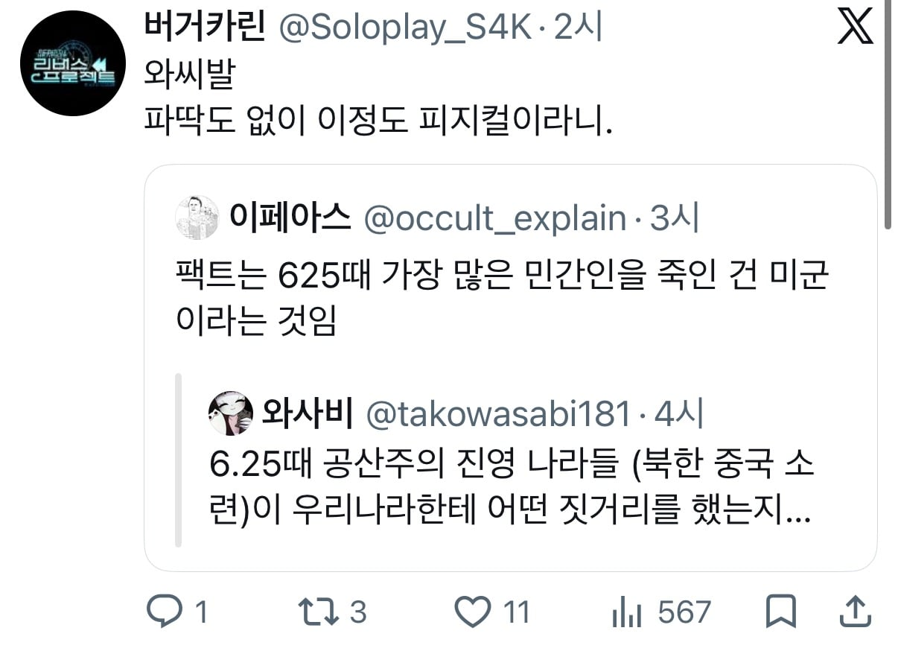
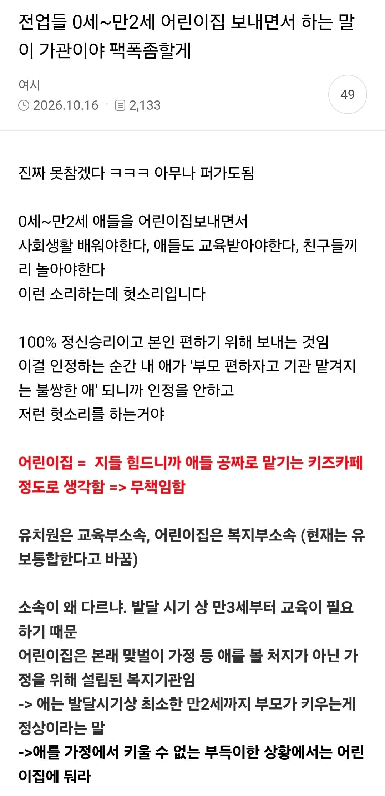
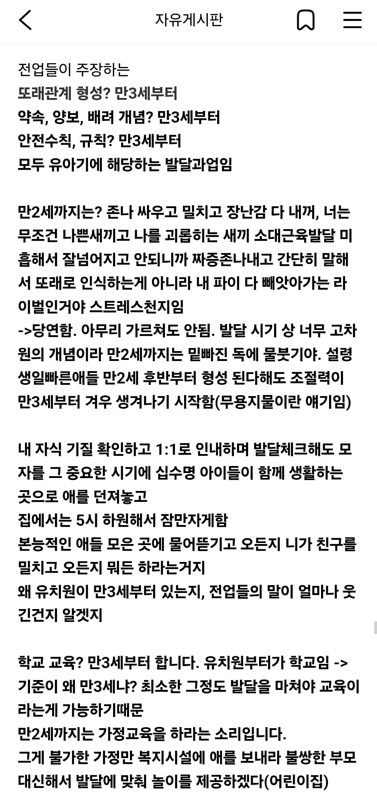
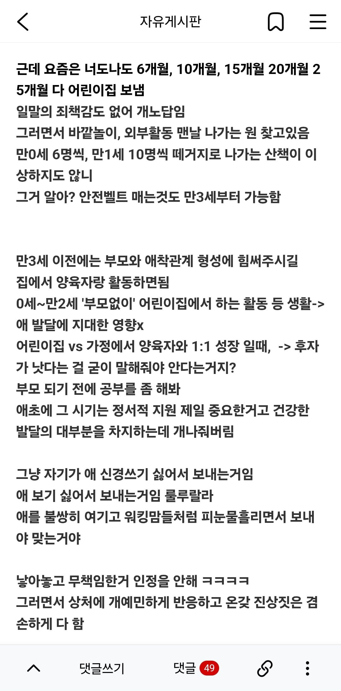
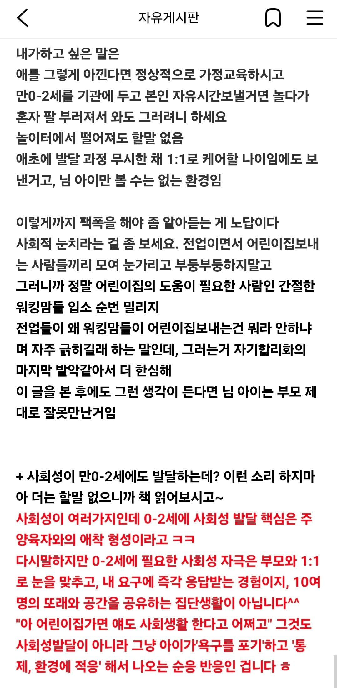
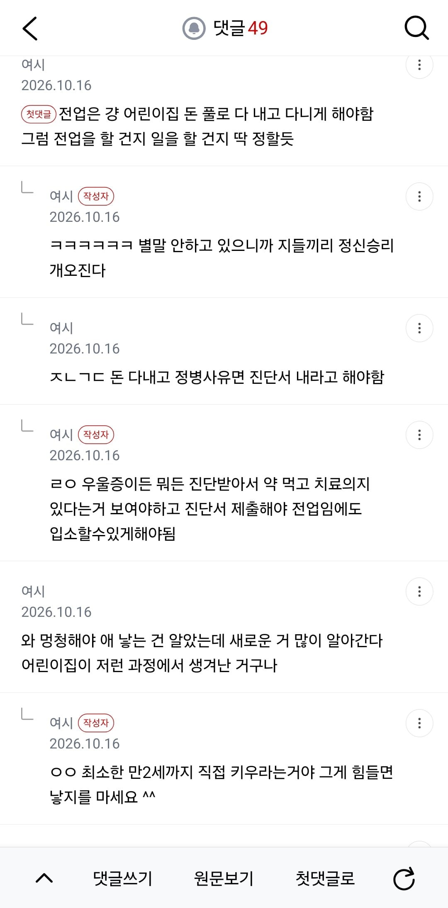
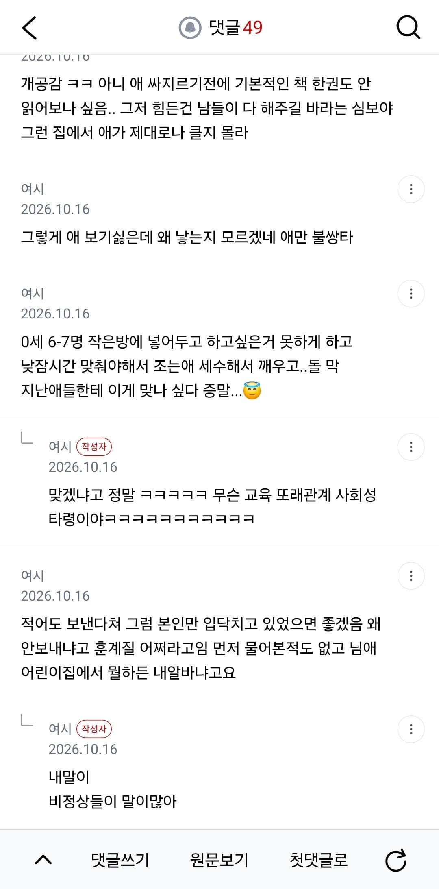
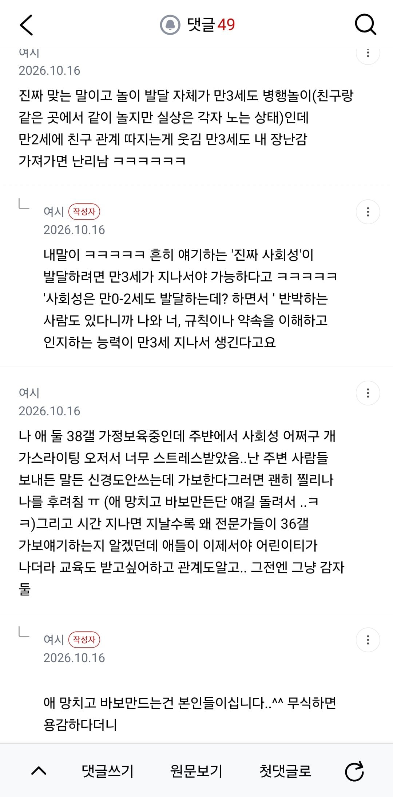
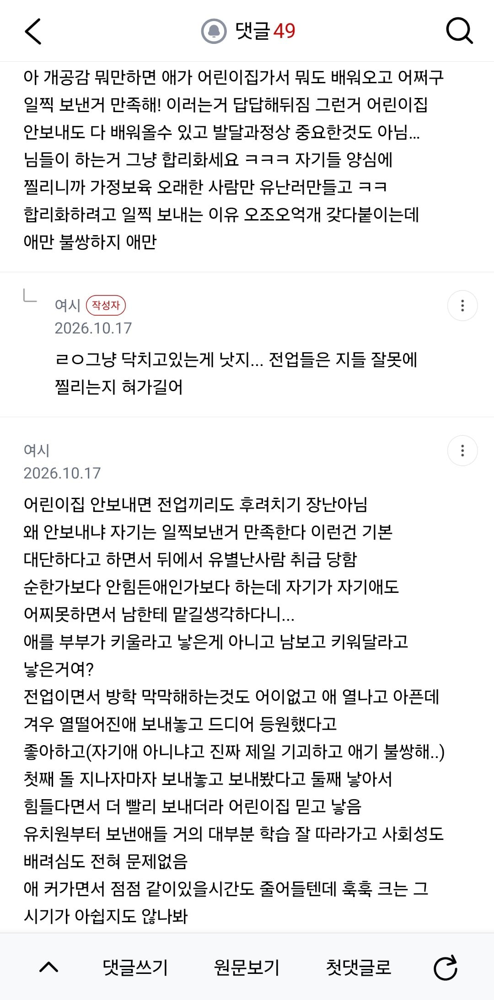
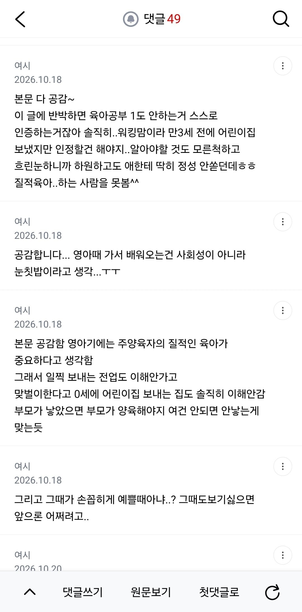
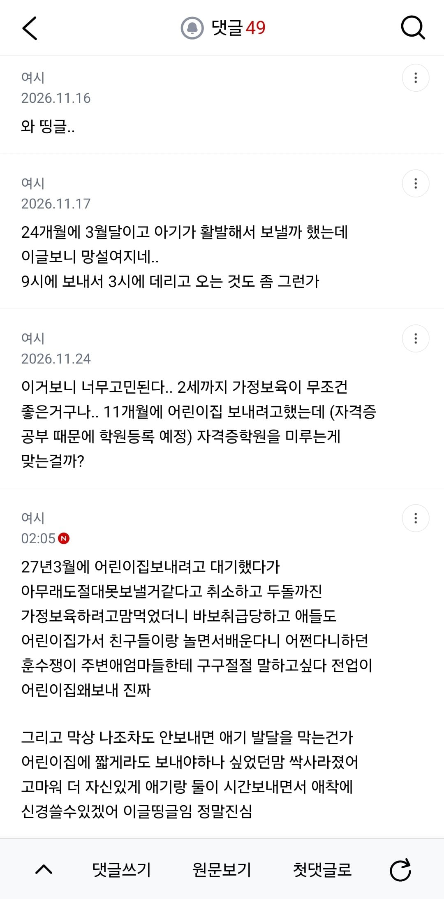
평생 애를 낳을 일 없는 콧수염 페미분들이라 어린이집을 피치못해 보내는 이유를 모르나봄
하긴 아기랑 딱 하루만 있어도 눈물콧물 질질짜면서 못보겠다고 할 것들이 ㅋㅋㅋ











평생 애를 낳을 일 없는 콧수염 페미분들이라 어린이집을 피치못해 보내는 이유를 모르나봄
하긴 아기랑 딱 하루만 있어도 눈물콧물 질질짜면서 못보겠다고 할 것들이 ㅋㅋㅋ
전업이면 더 직접 보는게 맞긴한듯
맞벌이면 어쩔수 없으니 보내는거고
근데 ... 글쓴곳이 여시라 ...
지랄한다 ㅋㅋㅋㅋ
이제 개드립 나 빼고 다 애아빠구나...